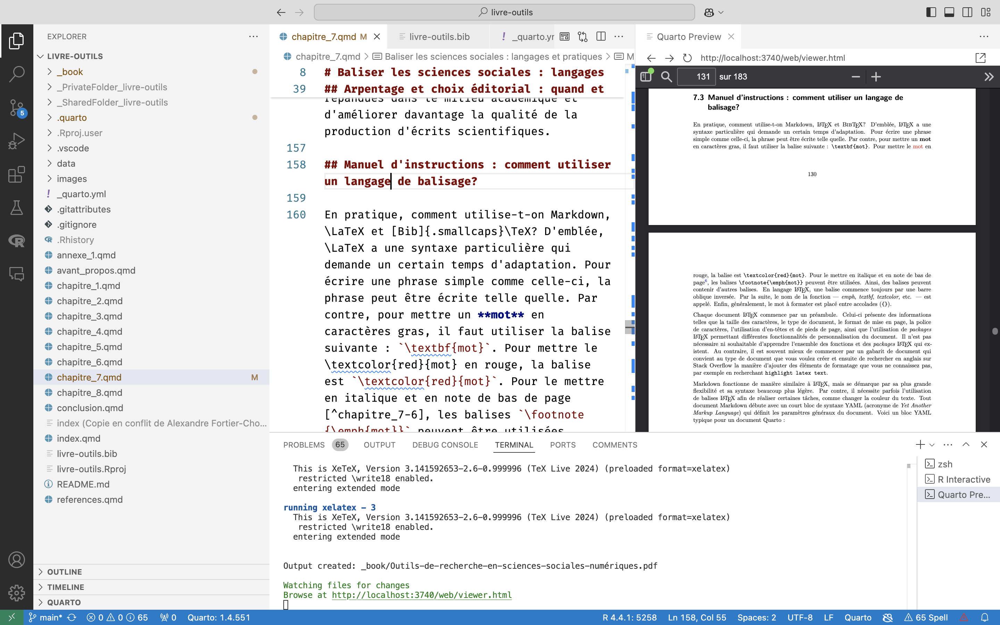
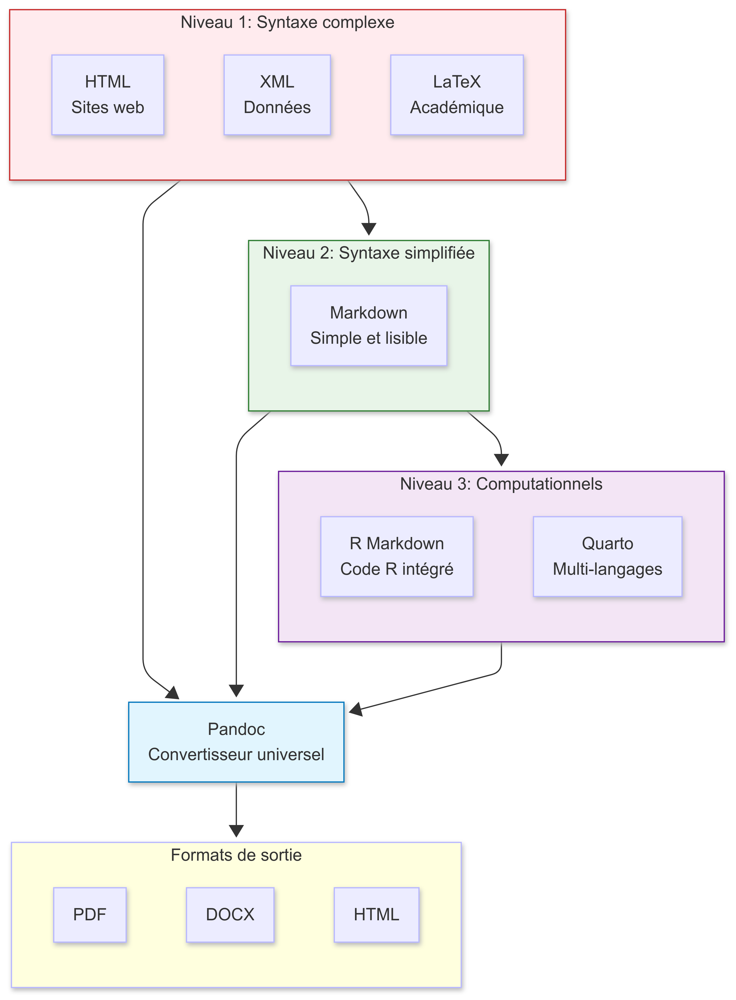
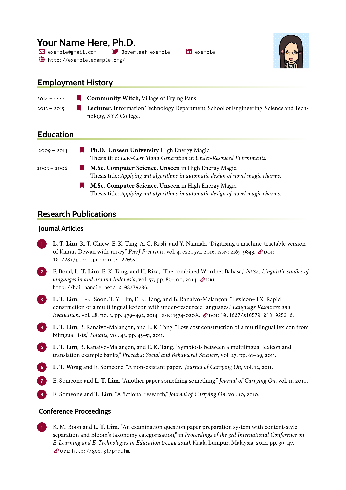
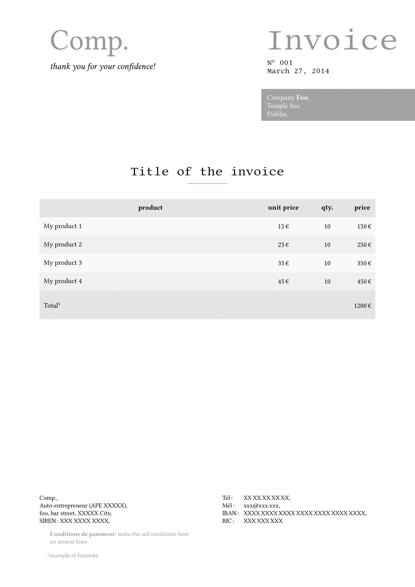
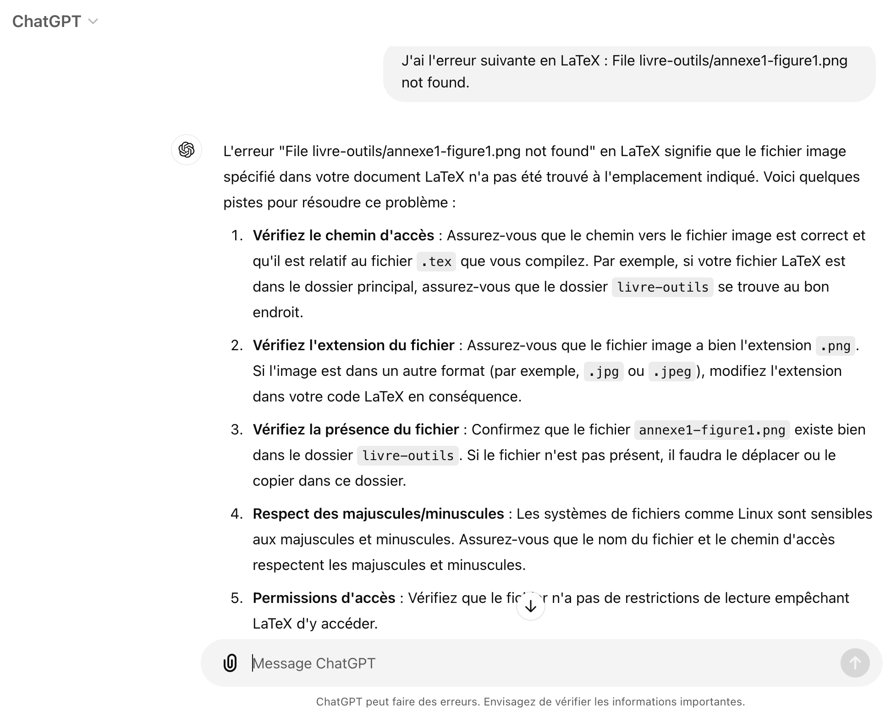
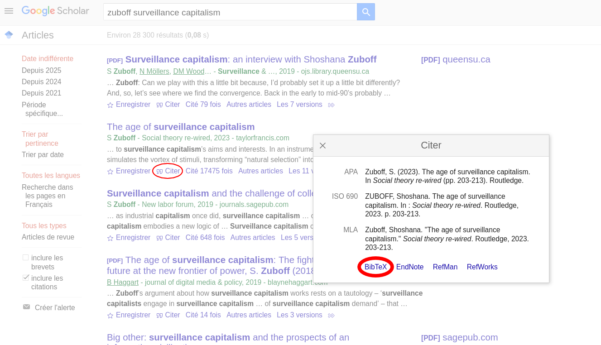
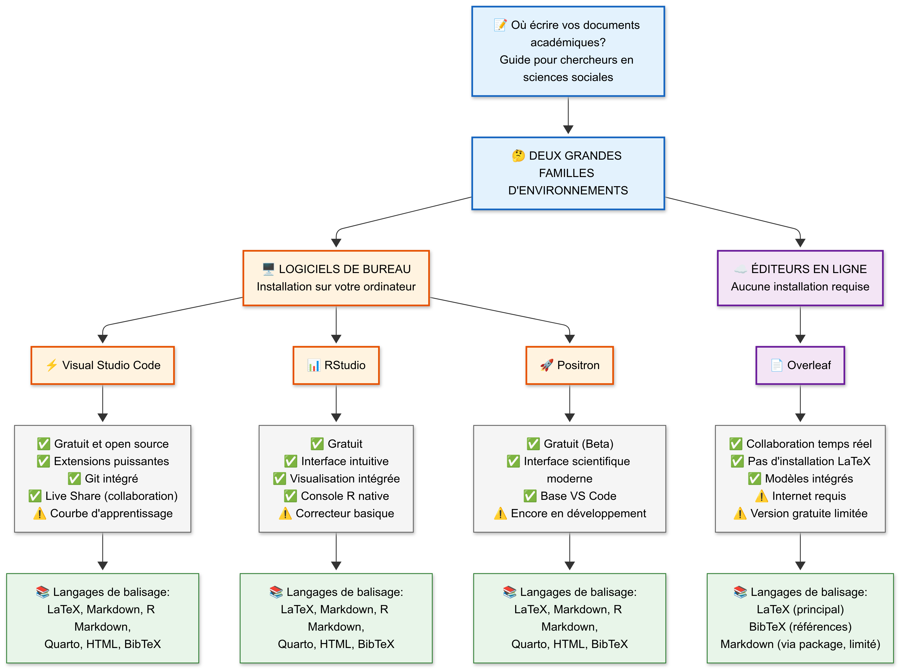

Je me présente
Marc-Antoine Dupuis
Étudiant à la maîtrise en science politique, Université Laval
- Projet de maîtrise sur le recensement canadien et la stratification sociale au Québec
- Assistant de recherche au CAPP et à Vox Pop Lab
- Projets : Datagotchi, Polimètre, Stratification Sociale, Boussole Électorale
- Réserviste, Forces armées canadiennes
- Outils : R, HTML, CSS, LaTeX, Markdown, Git et GitHub
Notre objectif
Passer de :
« Je ne sais pas ce que je ne sais pas. »
à :
« Je sais ce que je ne sais pas. »
Vous ne maîtriserez pas tout en 55 minutes. Vous saurez toutefois nommer les possibilités, reconnaître les compromis et choisir votre prochaine étape.
Ordre du jour
| Heure | Activité |
|---|---|
| 13:05–13:25 | Présentation théorique |
| 13:25–13:45 | Démonstration pratique |
| 13:45–14:00 | Période de questions et retour à vos classes |
Point de départ
Source principale
Outils de recherche en sciences sociales numériques, « Livre d’outils ».
Chapitre 8, « Outils de rédaction en sciences sociales numériques : les langages de balisage », Alexandre Fortier-Chouinard, Étienne Proulx et Maxime Blanchard.
La grille d’évaluation reprend aussi le chapitre 1, « Le logiciel libre et le code source ouvert », Jozef Rivest et Catherine Ouellet.
1 · Point d’observation
Qu’est-ce qu’un langage de balisage?
Du texte lisible, des balises visibles et un document final compilé.
Pourquoi des langages de balisage?
Les traitements de texte réguliers atteignent rapidement leurs limites lorsqu’un document comprend :
- une mise en page réglée avec précision;
- des figures et tableaux de grande qualité;
- un gabarit professionnel strict;
- des références bibliographiques nombreuses;
- des éléments interactifs ou des extraits de code.
Les langages de balisage offrent une interface différente pour contrôler ces éléments.
Définition
Un langage de balisage est un ensemble de commandes entremêlées au texte.
Ces commandes, appelées balises, indiquent au logiciel comment structurer ou présenter le contenu :
- caractères gras ou italiques;
- titres et niveaux de sections;
- interligne et mise en page;
- position des images;
- références, tableaux et équations.
La standardisation permet à une même balise de produire une action prévisible.
Du texte source au document
La compilation transforme le fichier source et ses balises en document final mis en page.
Le balisage en pratique

La source, les balises et le résultat peuvent être observés côte à côte dans un même environnement de travail.
Une brève histoire
| Année | Langage ou système |
|---|---|
| 1969 | GML, créé chez IBM pour standardiser des applications |
| 1985 | LaTeX |
| 1988 | BibTeX |
| 1993 | HTML |
| 1998 | XML |
| 2004 | Markdown |
| 2012 | R Markdown |
| 2022 | Quarto |
Le fil conducteur : rendre les mêmes commandes réutilisables entre systèmes.
Une famille, plusieurs usages
- HTML décrit la structure d’une page Web.
- XML structure et échange de grands volumes de données.
- LaTeX compose des documents complexes avec précision.
- Markdown produit des documents PDF, HTML ou DOCX avec une syntaxe légère.
- R Markdown ajoute du code R à un document Markdown.
- Quarto réunit Markdown, code, références et publication multiformat.
Les langages peuvent communiquer entre eux dans un même fichier.
Trois niveaux d’abstraction

Plus l’abstraction augmente, plus la complexité technique est masquée.
Niveau 1 · Syntaxe complexe
HTML, XML et LaTeX demandent de préciser de nombreux détails techniques.
L’utilisateur contrôle directement :
- les balises et leur imbrication;
- les schémas de données;
- les commandes typographiques;
- la structure fine du document.
Ce niveau offre beaucoup de puissance, mais exige davantage d’apprentissage.
Niveau 2 · Syntaxe légère
Markdown cache la complexité derrière des commandes courtes et lisibles.
L’utilisateur peut se concentrer sur le contenu pendant que le système gère la conversion.
Niveau 3 · Publication computationnelle
R Markdown et Quarto intègrent dans un même flux :
- le texte en Markdown;
- l’exécution de code R, Python, Julia ou JavaScript;
- les tableaux et graphiques produits par le code;
- les références bibliographiques;
- la génération de plusieurs formats.
Pandoc agit comme convertisseur universel entre la source et les sorties.
Vous utilisez déjà des balises
Quand vous cliquez sur Gras dans Word, le logiciel enregistre une instruction de mise en forme, mais l’interface vous la cache.
Le balisage rend l’instruction visible et redonne du contrôle à l’utilisateur.
Boutons ou commandes?
Traitement de texte
- interface intuitive;
- résultat visible immédiatement;
- fonctions limitées aux boutons disponibles.
Langage de balisage
- commandes écrites manuellement;
- contrôle presque illimité;
- coût d’apprentissage et erreurs possibles.
La précision de la syntaxe
Les langages de balisage n’interprètent pas l’intention.
- chaque caractère compte;
- la balise doit être reconnue par l’environnement;
- son positionnement délimite le contenu visé;
- une erreur peut empêcher toute la compilation.
Compiler souvent permet de repérer l’erreur avant qu’elle ne s’accumule.
Balisage ou programmation?
Un langage de programmation définit surtout des processus informatisés : récolter, analyser et visualiser des données.
Un langage de balisage encode et présente un contenu lisible par l’humain et la machine.
Dans un projet de recherche :
Quarto permet de réunir les deux.
2 · Quand et pourquoi?
Choisir selon le besoin
Plus un document devient long et complexe, plus le balisage devient avantageux.
Complexité du document

Une liste d’épicerie n’exige pas LaTeX. Une thèse complexe peut justifier son apprentissage.
Quatre bénéfices structurants
Les avantages des langages de balisage combinent principalement :
- Automatisation : appliquer une règle partout et mettre à jour sans répétition.
- Personnalisation : définir précisément le résultat attendu.
- Flexibilité : adapter la source, l’outil et le format de sortie.
- Qualité graphique : préserver une composition professionnelle et uniforme.
Les six critères d’un bon outil
- Accessibilité : peut-on réellement y avoir accès?
- Communauté : trouvera-t-on de l’aide?
- Popularité dans le champ : nos partenaires l’utilisent-ils?
- Compatibilité : s’intègre-t-il à notre flux de travail?
- Transparence et réplicabilité : peut-on comprendre et refaire?
- Adaptabilité et flexibilité : l’apprentissage restera-t-il utile?
Comparaison des outils de rédaction
| Critère | LaTeX | R Markdown | Quarto | Word |
|---|---|---|---|---|
| Accessibilité | Oui | Oui | Oui | Non |
| Communauté | Très grande | Grande | Moyenne, en croissance | Très grande |
| Popularité | Oui | Oui | Oui | Oui |
| Compatibilité | Moyenne | Forte | Forte | Faible |
| Transparence et réplicabilité | Oui | Oui | Oui | Non |
| Adaptabilité et flexibilité | Très forte | Forte | Forte | Forte |
Référencement automatisé
LaTeX et Markdown peuvent utiliser BibTeX pour :
- appliquer automatiquement un style bibliographique;
- distinguer articles, livres et pages Web;
- retirer de la bibliographie une source supprimée du texte;
- signaler une référence manquante;
- créer des liens entre citations et notices;
- changer de style sans réécrire chaque référence.
Word et Zotero automatisent aussi une partie du travail, mais avec moins de contrôle fin.
Figures et tableaux
Le balisage permet de contrôler :
- la taille et le positionnement;
- la numérotation automatique;
- les renvois internes cliquables;
- les listes de figures et de tableaux;
- la qualité du fichier intégré;
- la mise à jour lorsque la source change.
Ajouter du texte avant une figure ne devrait plus créer une demi-page vide imprévisible.
Quarto et le code
Quarto peut produire une figure ou un tableau dans le même fichier que le texte.
Si les données ou le code changent, le résultat est régénéré au prochain rendu.
La source documente donc à la fois le raisonnement et son résultat.
Équations
LaTeX permet d’écrire des symboles et équations complexes dans le texte ou dans un bloc distinct.
La composition, la numérotation et les renvois sont gérés automatiquement.
Architecture du document
Les niveaux de titres définissent la structure logique du document.
Cette structure alimente automatiquement :
- la table des matières;
- les numéros de sections;
- les liens vers les pages ou sections;
- les listes de figures et de tableaux;
- les références croisées.
Une modification de l’ordre ne demande pas de renumérotation manuelle.
Gabarits et mise en page
Un gabarit fournit une base professionnelle pour :
- un article;
- un livre;
- un rapport;
- un curriculum vitæ;
- une facture;
- une thèse ou un mémoire.
Le code du gabarit reste accessible : on peut comprendre, modifier et réutiliser ses choix.
Exemples de gabarits


Les gabarits peuvent être utilisés tels quels ou adaptés progressivement.
Un seul contenu, plusieurs sorties
Markdown et Quarto peuvent produire un document Web, imprimable ou révisable à partir de la même source.
Compatibilité entre formats
Pandoc Markdown permet d’intégrer dans un même document :
- Markdown;
- LaTeX;
- HTML;
- du code R ou Python avec Quarto.
La sortie DOCX facilite la collaboration avec les personnes qui n’utilisent pas le balisage et avec les revues qui exigent Word.
Popularité dans la recherche
LaTeX est largement adopté dans la publication scientifique.
La popularité apporte des bénéfices pratiques :
- davantage de collaborateurs potentiels;
- beaucoup de documentation et de gabarits;
- des pratiques partagées entre universités;
- des compétences transférables entre projets.
Overleaf comptait déjà des millions d’utilisateurs dans presque tous les pays.
Une communauté pour les embûches
LaTeX et Markdown possèdent de vastes communautés d’utilisateurs.
En cas de problème :
- lire précisément le message d’erreur;
- chercher les termes techniques en anglais;
- consulter la documentation;
- comparer les réponses sur Stack Overflow;
- demander l’aide d’un pair.
Même les utilisateurs expérimentés cherchent régulièrement des solutions.
L’intelligence artificielle comme aide

Un modèle génératif peut expliquer ou proposer une balise, mais sa réponse doit être testée et vérifiée.
Logiciel libre et code ouvert
LaTeX et Quarto s’inscrivent dans la philosophie du logiciel libre et du code ouvert.
- utilisation sans restriction de domaine;
- redistribution permise;
- code source accessible;
- modification et amélioration possibles;
- licences technologiquement neutres;
- disponibilité sur plusieurs systèmes d’exploitation.
Gratuit ne signifie pas sans coût : l’apprentissage et l’entretien demandent du temps.
Le suivi des modifications
Markdown et LaTeX n’offrent pas nativement le suivi visuel de Word.
Les solutions possibles :
- commentaires dans le fichier source;
- annotations dans le PDF produit;
- historique Git et comparaison des versions;
- révision d’une sortie DOCX produite par Quarto.
Git est puissant, mais un long paragraphe fortement modifié reste parfois difficile à comparer.
La qualité de la langue
Les environnements ne possèdent pas tous un correcteur complet en français.
- VS Code : LanguageTool/LTeX et extension Antidote;
- Overleaf : LanguageTool;
- RStudio : correcteur orthographique de base;
- Positron : extensions héritées de VS Code;
- Word : correction linguistique intégrée plus familière.
L’outil de rédaction ne remplace jamais une révision attentive.
Choisir son environnement d’écriture
Pour la rédaction scientifique :
- VS Code, Positron ou Overleaf offrent des extensions linguistiques avancées;
- RStudio demeure excellent pour l’analyse de données et l’intégration de R;
- une approche hybride peut combiner RStudio pour l’analyse et un autre éditeur pour la rédaction.
Le meilleur environnement dépend du besoin, pas seulement du langage choisi.
Deux fichiers, deux moments
Un langage de balisage implique généralement :
- un fichier source
.tex,.mdou.qmd; - un fichier final
.pdf,.docxou.html.
La compilation peut prendre plusieurs secondes. L’effet d’une balise n’est donc pas toujours visible immédiatement.
Cette séparation est un coût, mais elle rend le processus explicite et reproductible.
La difficulté propre à LaTeX
LaTeX est puissant, mais sa courbe d’apprentissage est marquée.
- une tâche simple peut demander plusieurs lignes;
- une faute de frappe peut bloquer la compilation;
- les tableaux complexes exigent beaucoup de syntaxe;
- les messages d’erreur sont parfois difficiles à interpréter.
Markdown réduit ces difficultés avec des balises plus courtes et intuitives.
La conversion avec Word
De Word vers LaTeX ou Markdown : les balises doivent souvent être recréées.
De LaTeX vers Word : Pandoc ne reconnaît pas toujours toutes les commandes.
De Quarto vers Word : la sortie DOCX est plus simple et peut utiliser un gabarit Word.
Les conversions complexes demandent toujours une vérification du document final.
Word n’est pas l’adversaire
Word demeure utile pour :
- les documents simples et rapides;
- le suivi intuitif des modifications;
- les équipes multidisciplinaires;
- les revues qui exigent un fichier DOCX.
Le balisage devient surtout avantageux pour les documents longs, structurés, automatisés et reproductibles.
3 · Manuel d’instructions
Comment utiliser les langages de balisage?
LaTeX, Markdown, Quarto et BibTeX reposent sur des syntaxes complémentaires.
Syntaxe LaTeX
Une commande LaTeX commence généralement par une barre oblique inversée.
Les accolades délimitent le contenu. Une commande peut en contenir une autre.
Le préambule LaTeX
Chaque document LaTeX commence par un préambule qui définit notamment :
- le type et la taille du document;
- la police et les marges;
- les en-têtes et pieds de page;
- les fonctionnalités ajoutées par les packages.
Il n’est pas nécessaire de tout mémoriser : partir d’un gabarit et chercher une commande précise est souvent plus efficace.
L’en-tête YAML de Quarto
Le YAML décrit le document : métadonnées, format de sortie, table des matières, bibliographie, police ou gabarit.
Syntaxe Markdown
Plus il y a de #, plus le niveau hiérarchique du titre est bas.
Les limites de Markdown
Markdown est particulièrement efficace pour des documents simples et professionnels.
Pour une mise en page très précise :
- ajouter ponctuellement du LaTeX ou du HTML;
- utiliser un thème ou un gabarit;
- définir un modèle DOCX dans Quarto;
- choisir directement LaTeX lorsque la composition l’exige.
La simplicité de Markdown vient nécessairement avec moins de contrôle natif.
Une notice BibTeX
Chaque notice commence par @, indique un type de publication et possède une clé unique.
Citer avec BibTeX

Dans LaTeX, \cite{darwin03} appelle la notice. Dans Quarto, la forme @darwin03 peut être utilisée.
Les environnements disponibles

Le langage, l’éditeur et le compilateur sont trois choix distincts.
Les éditeurs de bureau
VS Code
- multilingue et très extensible;
- adapté à HTML, LaTeX, Markdown, Quarto et plusieurs langages de programmation.
RStudio
- conçu autour de R;
- pratique pour réunir analyse, graphiques et document Quarto.
Les deux permettent de travailler localement et de versionner les fichiers avec Git.
Installer la chaîne de publication
Selon le langage, il faut parfois ajouter :
- une distribution LaTeX comme TinyTeX, MacTeX ou MiKTeX;
- le package
rmarkdownpour R Markdown; - Quarto pour les documents
.qmd; - les extensions de l’éditeur;
- Pandoc, généralement inclus avec Quarto ou RStudio.
L’environnement doit reconnaître le langage avant de pouvoir le compiler.
Les éditeurs en ligne
Overleaf facilite l’écriture collaborative en LaTeX :
- accès dans le navigateur;
- collaboration en temps réel;
- compilation sans installation locale;
- compteur de mots et gabarits.
Contreparties : dépendance à Internet, limites de la version gratuite et absence de sorties DOCX ou HTML comparables à Quarto.
4 · Pièges et astuces
Passer de débutant à utilisateur autonome
Il n’est pas nécessaire de tout comprendre avant de produire un premier document.
Commencer par expérimenter
La première étape est de produire rapidement un petit résultat.
- partir d’un exemple minimal;
- modifier un seul élément;
- compiler;
- observer le résultat;
- recommencer.
L’incompréhension initiale est normale et diminue par itérations courtes.
Utiliser les ressources disponibles
Pour gagner du temps :
- fiches aide-mémoire;
- documentation officielle;
- Stack Overflow;
- gabarits GitHub;
- modèles d’intelligence artificielle;
- livres et tutoriels.
Demander de l’aide externe fait partie du travail, même au niveau expert.
Ne pas sous-estimer les pairs
Une personne expérimentée peut reconnaître en quelques secondes :
- une accolade manquante;
- un package non chargé;
- un mauvais chemin de fichier;
- un conflit Git;
- un format de sortie mal configuré.
La communauté constitue une composante du choix d’un bon outil.
Vérifier les exigences de sortie
Avant de commencer, vérifier ce que demande la revue, l’université ou le partenaire :
- PDF final;
- fichier Word révisable;
- source LaTeX;
- document accessible en HTML;
- gabarit institutionnel précis.
Le meilleur langage est celui qui permet d’atteindre la sortie réellement exigée.
Rester polyvalent
Ne pas se limiter à un seul langage.
- LaTeX offre le contrôle typographique;
- Markdown accélère l’écriture;
- Quarto réunit texte et calcul;
- HTML structure la publication Web;
- Word reste utile pour certaines collaborations.
La polyvalence facilite l’adaptation aux pratiques des partenaires.
Compiler fréquemment
Une erreur récente est plus facile à trouver qu’une accumulation de dix erreurs.
Bon rythme :
Les sauvegardes et commits fréquents créent aussi des points de retour fiables.
Protéger la qualité de la langue
Vérifier :
- la langue configurée dans l’éditeur;
- la présence d’un correcteur grammatical;
- les faux positifs causés par les balises;
- le document final après compilation;
- les coupures et caractères spéciaux.
Une excellente mise en page ne compense pas une langue négligée.
Éviter les conflits Git
Pour collaborer efficacement :
- répartir clairement les sections;
- synchroniser avant de commencer;
- effectuer de petits commits descriptifs;
- éviter de modifier simultanément les mêmes lignes;
- résoudre les conflits avant de poursuivre.
Les fichiers texte rendent la collaboration traçable, mais pas automatique.
Être créatif
La dernière étape consiste à dépasser les exemples de départ.
Les langages de balisage permettent de produire :
- des documents professionnels personnalisés;
- plusieurs formats à partir d’une source;
- des résultats mis à jour automatiquement;
- des processus transparents et reproductibles;
- des formes de publication impossibles ou difficiles dans un traitement de texte classique.
Ce que je sais maintenant
- Je sais ce qu’est une balise et ce que signifie compiler.
- Je distingue programmation, balisage, éditeur et moteur de publication.
- Je connais les forces de LaTeX, Markdown, Quarto et Word.
- Je connais aussi leurs coûts et leurs limites.
- Je peux choisir un outil à partir du besoin, de l’équipe et du format attendu.
L’objectif n’est pas de tout mémoriser, mais de savoir quoi chercher ensuite.
Questions
13:45–14:00
- Qu’est-ce qui vous semble immédiatement utile?
- Quel obstacle vous paraît le plus important?
- Quel document aimeriez-vous produire autrement?
À 14:00 : retour à vos classes.